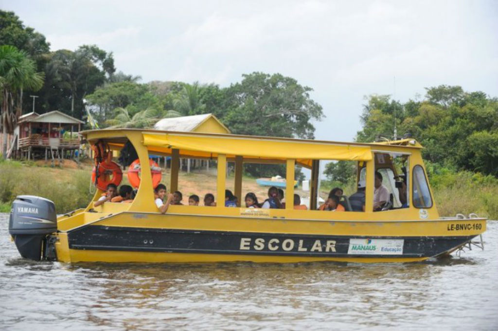
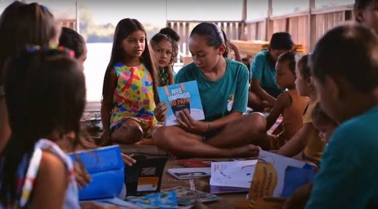
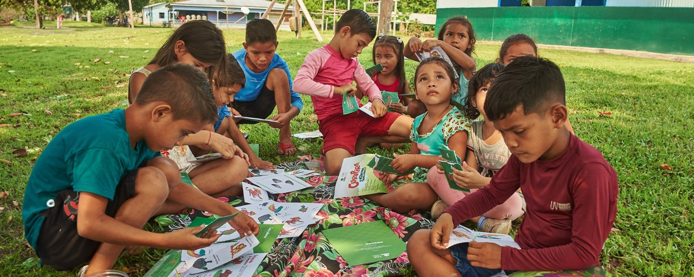

O que é a Educação Ribeirinha?
É o modelo de ensino voltado para as populações que residem nas proximidades dos rios, na maioria das vezes em casas palafitas, construídas de madeira alguns metros acima do nível da água. As crianças, adolescentes e adultos da região têm acesso às escolas ribeirinhas, que também se localizam nas margens dos rios. Essas instituições muitas vezes funcionam de maneira improvisada, e seu calendário letivo é adaptado ao ciclo das águas, já que os alunos dependem do rio para ir e vir.
Como Funciona

Calendário flexível
O ano letivo é adaptado ao ciclo das águas (cheia e vazante), pois os alunos dependem do transporte fluvial
em canoas ou embarcações para ir à escola.

Multisseriação
É comum que turmas de diferentes anos escolares compartilhem a mesma sala de aula com um único professor, que orienta alunos de idades e níveis distintos simultaneamente.

Conexão com o saber local
As práticas pedagógicas buscam integrar o conhecimento tradicional da comunidade (como uso de ervas medicinais, pesca e manejo ambiental) ao conteúdo curricular.
Desafios da Educação Ribeirinha
Um dos maiores desafios da educação ribeirinha é o acesso. É custoso e difícil fazer o transporte escolar, dos professores, e também fazer a merenda chegar. Muitas vezes os alunos acordam cedo para tentar chegar na escola, mas nem sempre conseguem, seja por falta de barcos ou lanchas, ou devido ao volume de água dos rios. O acesso à internet na região também é precário.
Além disso, as condições de transporte também são pontos negativos. Alguns barcos não oferecem nenhuma segurança para as pessoas, e podem até mesmo bater em pedras e virar por causa das marolas naturais ou provocadas pelas embarcações.
A questão do saneamento básico é outro problema. Mesmo cercados pelas águas dos rios, professores e alunos não têm acesso a água encanada, assim como as instituições de ensino também não possuem energia elétrica por rede de distribuição.